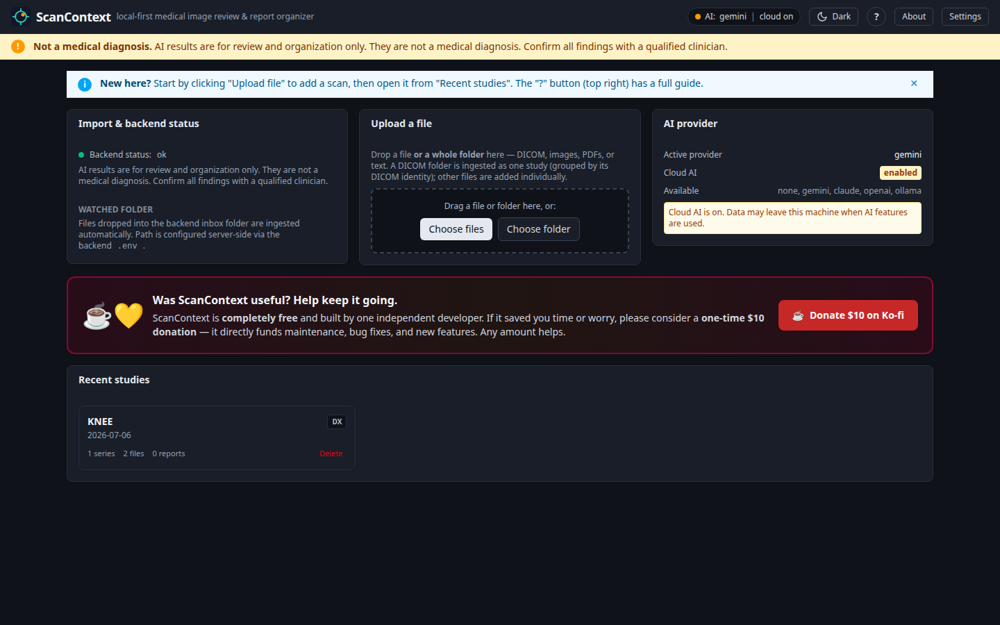

Understand your medical scans on your own computer.
ScanContext is a free app that opens your medical images and reports,
organizes them, translates and summarizes them in plain language, and
helps you prepare clear questions for your doctor — all without
uploading anything.
ScanContext in action — your studies, viewer, and reports together in one window.
⚠️
Not a medical device. Not a diagnosis. ScanContext
helps you organize, view, and understand medical imaging and reports. It
does not diagnose any condition. Every result —
especially anything AI-suggested — must be confirmed by a qualified
clinician.
What it is
A calm, private place for confusing medical files
A CD of scan images, a folder of DICOM files, a PDF report in a language
you don't read — medical records arrive in formats made for
hospitals, not for you. ScanContext opens all of them in one window,
keeps them on your machine, and explains them in plain language.
🔒
100% local-first
Runs on your own computer. Your scans and reports never leave it
unless you deliberately turn on a cloud AI provider.
🩹
For patients & families
No medical or technical background needed. Plain-language summaries,
guided tour, and a help button on every screen.
🧾
AI is optional
ScanContext works fully without AI. When you choose to enable it,
results are always labelled "candidate findings, not a diagnosis".
How it works
From a pile of files to a clear conversation
Five simple steps. You stay in control at every one.
Import your files
Drag a file or a whole folder straight onto the app — DICOM studies,
image files, ZIPs, PDFs, or text reports. ScanContext sorts them into
studies for you, and you can delete any study when you're done.
View & annotate
Open images and DICOM scans in a built-in viewer. Draw, mark, and
save annotations to remember what you want to ask about.
Extract & translate
Pull the text out of reports and, when needed, translate
non-English reports into English — right on your machine.
AI assist (optional)
If you turn it on, AI summarizes reports and points to regions of an
image worth a closer look — always clearly marked as candidates,
never a diagnosis.
Export for your doctor
Generate a tidy, doctor-friendly summary of the study and your
questions to bring to your appointment.
Under the hood: ScanContext runs as a small set of services inside
Docker on your computer — a viewer, a report engine, and a local
DICOM store. You never touch any of that; the app starts and stops it for
you.
See it in action
A look inside ScanContext
Everything below is the real app, captured from its built-in demo study
— a fully fictional CT chest scan with invented patient details. No
real medical data is shown.
Drag a file or a whole folder to import; your studies, import
status, and AI provider at a glance. Delete a study anytime.

Light, Dark, or System theme — switch from the header or Settings.Scroll slices, zoom, and adjust window/level in the viewer.Confirmed marks in solid blue; AI suggestions in dotted amber.Reports shown as imported, with optional translation and summary.Optional AI review — candidate findings, never a diagnosis.Export a doctor-friendly ZIP — anonymized if you choose.
Why use it
The benefits, in plain terms
🏠
Your data stays home
Nothing is uploaded by default. Files live in a folder on your
computer that you can see and back up.
💬
Plain language
Turns dense radiology wording into something you can actually read,
and translates foreign-language reports.
🧰
One viewer for everything
DICOM, JPEGs, PDFs, ZIP archives, text reports — all opened in
one place, no extra software.
💰
Free to use
Built by one independent developer. Free, with an optional small
donation if it helps you.
💻
Works everywhere
Windows, macOS, and Linux — the same app, the same simple
steps on every system.
🪥
You decide on AI
AI is off until you switch it on, and you confirm cloud use for each
individual study.
📋
Ready for the doctor
Walk into your appointment with an organized summary and a clear
list of questions.
📱
One-click app
A desktop app with a tray / menu-bar icon starts and stops
ScanContext for you — no scripts to run.
⚡
Fast after first run
The first start downloads the app once. Every start after that is
quick.
Install — a friendly step-by-step guide
Get ScanContext running in three steps
No GitHub account and no source code needed, and we'll walk you through
every step. On Windows and macOS you don't touch a terminal at all.
Please follow the steps in order — just pick your system in
Step 2.
Step 1 — one time
Install Docker Desktop (free)
ScanContext runs inside Docker, so install Docker Desktop first. It is
free and you only ever do this once.
Then open Docker Desktop once and wait until it
says "running". Leave it running while you use ScanContext. That's
the whole of Step 1.
Step 2 — pick your system
Download & start ScanContextlatest release
There are two ways to run it — the app (easiest) or a
download bundle. Choose whichever you prefer; both work the same
once open. The buttons below download the file directly — there's
no other page to visit.
Option A — recommended
The ScanContext app
A small desktop app that starts and stops ScanContext for you.
First start downloads the app (a few minutes); then your browser opens ScanContext.
To stop it: click Stop in the app, or
run sh ./stop.sh in the bundle folder.
Looking for a previous version, or a different
file? Every release — current and older — with all of its
downloads is listed here:
all ScanContext releases ↗
Step 3 — you're in
Use ScanContext
When it's ready, ScanContext opens in your web browser. A short
guided tour runs the first time — reopen help any time with
the "?" button in the top-right corner. Import a study and explore.
Your studies and data are always kept between runs.
The download buttons above always point to the newest release. Older versions are on the all-releases page.
Before you start
System requirements
You need
Windows 10/11, macOS 12 or newer, or a modern Linux desktop
Docker Desktop installed and running
About 4 GB free disk space, plus room for your studies
A modern browser — Chrome, Edge, Firefox, or Safari
Good to know
Internet is needed only for the one-time first download (and for cloud AI, if you enable it)
The app uses ports 5173 and 8000 on your machine
No account, no sign-up, no telemetry
Optional
Connect an AI provider
ScanContext works fully without AI. When you turn it on, it can summarize
reports, translate non-English reports, and suggest regions of an image
worth a closer look — always labelled "candidate findings, not a
diagnosis". AI is off by default.
Provider
What it is
Privacy notes
Google Gemini
Recommended. Free tier to try; paid tier for real use.
Cloud. Anonymized data sent; paid tier required for genuine privacy.
Anthropic Claude
Paid cloud API.
Cloud. Anonymized data sent to Anthropic.
OpenAI
Paid cloud API.
Cloud. Anonymized data sent to OpenAI.
Ollama
Fully local AI — no key, no internet.
Nothing leaves your computer. Best for privacy.
Privacy & the Gemini free tier. ScanContext strips patient
identifiers before sending anything to a cloud provider — but on
Google Gemini's free tier, Google may still use your anonymized images
and reports to improve its models. Only the paid tier stops
that. For real medical data, use the paid tier — or use Ollama
to keep everything on your machine.
Setting up Google Gemini
Get a key at aistudio.google.com/apikey — sign in, click Create API key, copy it (starts with AIza…). Keep it private.
Turn on billing (paid tier) in the key's Google Cloud project — see the warning above. You can set a budget cap.
Add the key in ScanContext — no files to edit. Open ScanContext, click Settings in the top bar, then set:
AI provider: Gemini
Paste your key into Gemini API key (stored locally; the page never shows it back in full — only the last 4 characters)
Turn on Cloud AI enabled
Leave Anonymize before AI on (recommended)
Click Save settings
Changes apply immediately — no restart needed. Then open a study and use Analyze study; you confirm cloud use per study.
Your API keys are safe. Settings are protected automatically — only someone with access to your installation can change them. Keys are stored locally and never leave your machine.
Advanced — set the key in .env instead
For unattended / scripted setups, the same values can be written to the .env file. After editing it you must Stop, then Start ScanContext so it reloads.
gemini-2.5-flash — cheap, fast, good for everyday
use (the default). gemini-2.5-pro — the most
thorough analysis.
What does it cost?
Cost per study is capped by design (about a dozen sampled images).
Roughly 2–3¢ per scan on Flash, 10–20¢
on Pro. Even 100 studies a month is about $2–3 on Flash.
Rates are set by Google.
Help
Troubleshooting & common questions
It says "Docker is not installed" or "not running"
Install Docker Desktop, open it, and wait until it
reports "running". Then start ScanContext again. On macOS, make
sure Docker Desktop has been launched at least once.
Windows: Docker Desktop won't start (virtualisation not detected)
If Docker Desktop reports "failed to start because virtualisation
support wasn't detected", it is a Windows / PC setup issue. Two
independent fixes — most people need only one.
Fix A — turn on virtualization in your PC's BIOS/UEFI.
Restart and press the setup key shown on the boot screen (often
Del, F2, F10, or Esc). Find the virtualization
setting — Intel: Intel Virtualization Technology / VT-x;
AMD: SVM Mode / AMD-V — set it Enabled, save
& exit, and reopen Docker Desktop.
Fix B — repair the Windows features and WSL. Open Turn
Windows features on or off, untick Hyper-V and Virtual
Machine Platform, click OK and restart. Then open Windows
PowerShell and run wsl --update (if WSL is not installed,
run wsl --install as administrator) and restart. Open Docker
Desktop and click Try Again.
The very first run downloads the app images —
this can take a few minutes depending on your connection. Every start
after that is fast.
My system warns the app is unsafe / unknown
The installers aren't code-signed yet, so you may
see a warning the first time. macOS: right-click the app →
Open → Open. Windows: on the SmartScreen prompt,
click More info → Run anyway. You only do this once.
A port is already in use
ScanContext uses ports 5173 and
8000. If 5173 is taken, change
FRONTEND_PORT in the .env file and start again.
8000 is built into the app and must stay free — close
whatever is using it rather than changing BACKEND_PORT.
Is my medical data uploaded anywhere?
No — not by default. Everything stays on your
computer. Data is only ever sent out if you turn on a cloud AI
provider in Settings, and even then you confirm it per study. Use
Ollama to keep AI fully local too.
Can ScanContext tell me what's wrong with me?
No. ScanContext is not a medical device and
does not diagnose anything. It helps you organize and understand your
files and prepare questions. Every result — especially anything
AI-suggested — must be confirmed by a qualified clinician.
Where are my files stored?
In a data/ folder on your computer. With
the bundle it's inside the unzipped folder; with the app it's in the
per-user app data folder. Your studies are kept between runs — keep
that folder and any exports private.
How do I stop it?
In the app, click Stop (window or tray /
menu-bar icon). With the bundle, double-click Stop ScanContext.bat
on Windows, or run sh ./stop.sh on macOS / Linux.
ScanContext is not a diagnostic tool and not a substitute for
professional medical advice. Anything it shows — especially
AI-suggested findings — is a prompt for a conversation with your
doctor, never a conclusion.
Privacy
Medical files contain personal health information. ScanContext keeps
them on your machine; cloud AI is opt-in and strips identifiers first.
That anonymization only gives real privacy on a paid provider
plan — on a free tier, use Ollama for genuine medical data.
Support the project
ScanContext is free — and built by one person
If it saved you time or worry, a one-time $10 donation keeps it
maintained and improving. Any amount helps.